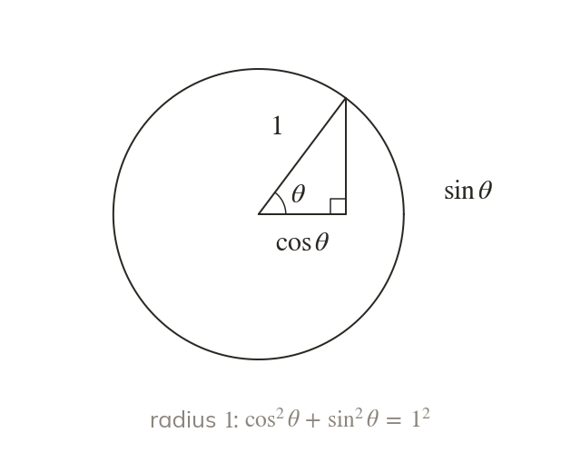
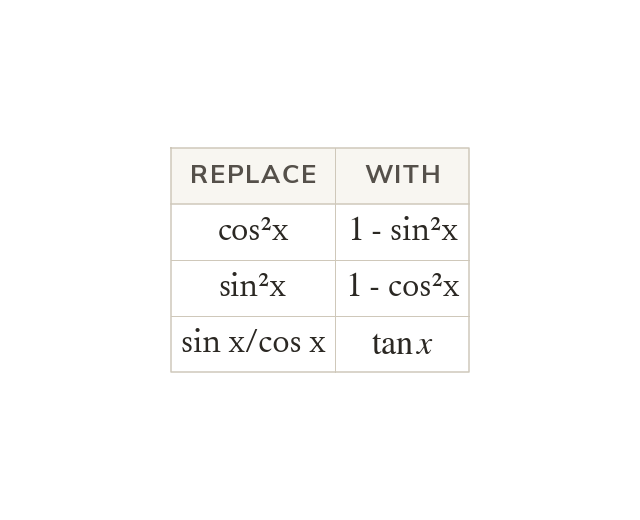
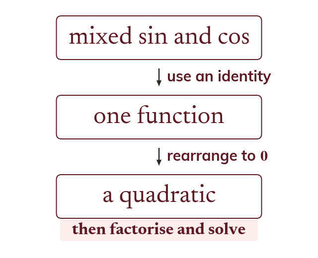

Pythagoras on the unit circle
The point (cos θ, sin θ) lies on a circle of radius
Pythagoras then gives
Two identities let any mix of sin, cos and tan be rewritten in a single function. That turns hard-looking trig equations into quadratics you already know how to solve.
Work down the page at your own pace. Write every answer in your book first, then click to check it.
Read each card, then follow the worked examples one step at a time.

The point (cos θ, sin θ) lies on a circle of radius
Pythagoras then gives
On the unit circle, is So = sin θ/cos θ, for any angle.

Each identity swaps one function for another. So cos²x becomes - sin²x, and sin x/cos x becomes
Pick an answer. If it's wrong, the feedback tells you which mistake it was.
Section Trigonometric identities : the questions that write an expression in terms of and the identities to prove.
Read each card, then follow the worked examples one step at a time.

A mixed equation is turned into one function with an identity. It is then often a quadratic.
A root outside to gives no angle. Factorising keeps the roots that dividing by would lose.
Pick an answer. If it's wrong, the feedback tells you which mistake it was.
Section Trigonometric identities : the equations that become quadratics by factorising or by the formula, and the equations mixing sin and cos.
Finished? Next lesson: 7.1-7.2 Area of a Triangle and the Sine Rule.
Log in, then search for a code to practise that skill.